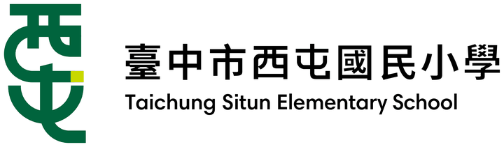

西屯特有種在地認同，是冒險的起點
在西屯長大的孩子，都是這片土地的「特有種」。我們從西大墩老街出發，走進烈美堂、張廖家廟，六個年級各有一門走讀課程，讓孩子用腳認識家鄉，長出對自己、對土地的認同。
- 認同
- 多元共榮
- 永續

四個方向，是我們陪孩子冒險的方式。
在西屯長大的孩子，都是這片土地的「特有種」。我們從西大墩老街出發，走進烈美堂、張廖家廟，六個年級各有一門走讀課程，讓孩子用腳認識家鄉，長出對自己、對土地的認同。
先「看見」，再「轉動」。看見每個孩子的亮點、看見世界的變化，然後把看見轉化成行動——這是西屯的品牌精神，也是我們思考每一件校務的方法。
認識自己的情緒、理解別人的感受、好好與人合作，是一輩子帶得走的能力。西屯正朝「社會情緒學習取向學校」前進，讓孩子在安心的關係裡，長出面對關卡的勇氣。
和日本、韓國、澳洲的夥伴視訊交流，讓孩子在真實的對話裡打開視野。根扎得深，翅膀才飛得遠——在地認同與國際視野，是同一條路的兩端。
孩子從 START 出發，沿途探索悅讀、國際、科技、美感、創意五大關卡，每一步都是通往未來的節點。
Logo 裡的那條路，也是校長自己走過的路——三十年，一站一站，每個節點都算數。
冒險從導師開始，蹲下來看見每個孩子。
第一個行政關卡，學會讓課程動起來。
教學、訓育、輔導組長輪番上陣，補齊每一種視角。
訓導、教務、總務三處歷練，看懂一所學校怎麼運轉。
從教育局的高度，重新看見學校。
首任校長，六年打磨一所學校的樣子。
回到西屯，和百年老校一起 See & Turn，現在進行式。
一路上解鎖的裝備——它們現在都用在孩子身上。
2016 赴美國印第安那大學，執行「臺美教室連結」自然課研究。
2006 派赴英國，研究國小學童憂鬱症輔導。
臺中教育大學，把心理專業帶進校園日常。
中小學性侵害或性騷擾調查專業培訓合格，守護校園安全。
雙語領航的語言底氣，也是走向國際的通行證。
校長之路的起點站。
除了校園裡的日常，Alex 校長也在這些地方持續分享教育的觀察與思考，歡迎追蹤、訂閱。
有任何想法、建議或合作邀約，歡迎直接與校長聯繫。